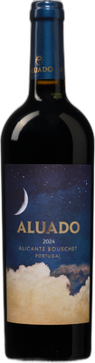

Aluado Alicante Bouschet

Aluado Alicante Bouschet is een Portugese rode wijn uit de Lisboa-regio van producent DFJ Vinhos (José Neiva) — een naam met een aantoonbare staat van dienst. De wijn heeft meer dan 40 gouden medailles op bekende competities, meerdere 90+-puntenscores en drie keer een Best Buy-aanduiding van Wine Enthusiast. De Vivino-score van 4,0 op basis van bijna 19.000 beoordelingen en een geaggregeerde Wine-Searcher-score van 87 punten wijzen in dezelfde richting: dit is een betrouwbaar, kwalitatief solide fles. Internationale marktprijzen liggen rond de $12–13 (exclusief belasting), wat de huidige aanbiedingsprijs van €7,99 — een korting van circa 24% op de normale prijs van €10,49 — als reëel bevestigt. Alicante Bouschet is een inheems Portugees druivenras dat internationaal weinig naam heeft, maar dat patroon is herkenbaar: lage naamsbekendheid, sterke prijs-kwaliteitverhouding.